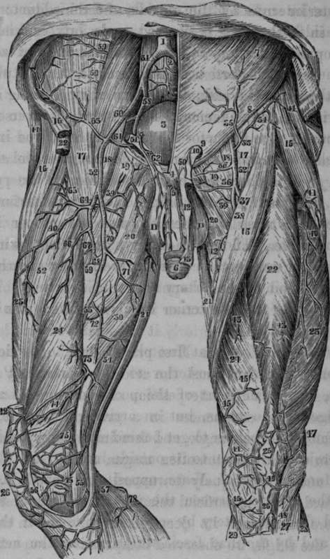

The Femoral Artery. Continued
Description
This section is from the book "Anatomy Of The Arteries Of The Human Body", by John Hatch Power. Also available from Amazon: Anatomy of the Arteries of the Human Body, with the Descriptive Anatomy of the Heart.
The Femoral Artery. Continued
In this stage of the dissection it will be observed that within the funnel, and throughout its length, the artery and vein do not lie in contact with one another, but are separated from each other by a more or less strong and thickened portion of the sheath: a similar structure exists also along the outer side of the artery, and along the inner side of the vein: these partitions are attached anteriorly to the fascia transversalis, and posteriorly to the fascia iliaca. The artery and vein are thus lodged in two separate and distinct compartments of the sheath; a similar arrangement has been already noticed when speaking of the carotid artery and internal jugular vein.
The posterior surface of the artery is applied, first, upon the anterior surface and inner portion of the psoas magnus muscle, with the intervention of the posterior wall of the funnel or femoral prolongation of the fascia iliaca, and the deep layer of the iliac portion of the fascia lata, and on part of the anterior surface of the capsule of the hip-joint: it then descends in front of the pectineus muscle, but separated from it by the profunda artery and the profunda and femoral veins and the pectineal portion of the fascia lata. Between the pectineus muscle and adductor longus there is sometimes an interval in which the femoral artery corresponds to the adductor brevis. In this region the artery is lodged in a prismatic space, bounded anteriorly by the anterior relations of the artery which form the base; internally by the pectineal or pubic portion of the fascia lata, and by the pectineus and adductor brevis muscles; externally by the psoas and iliacus internus muscles, and by the upper part of the vastus internus : the apex corresponds posteriorly to the convergence of the internal and external boundaries. Superiorly this space receives the parts which enter it from the abdomen behind the crural arch; and inferiorly it terminates in another prismatic channel, called the Hunterian canal. Previously to its entering into this canal, the artery is covered by the sar-torius muscle, with the interposition of a strong aponeurosis. This aponeurosis commences in a gradual manner, immediately below Scarpa's angle, and terminates abruptly opposite the origin of the anastomotica magna artery: its fibres are distinct, and run obliquely downward and outwards. After the removal of the superficial relations of the femoral artery, and before examining its deep-seated relations in the upper third of the thigh, we observe a comparatively superficial triangular space, called Scarpa's space or angle, which contains the artery and vein: it is bounded by the sartorius muscle on the outside, and the adductors on the inside; the convergence of these muscles below forms the apex, and the base is formed superiorly by Poupart's ligament. When the femoral artery passes under the sartorius muscle, it becomes lodged in the Hunterian canal; this canal occupies the middle third of the thigh, and is about four inches or four inches and a half in length, and of a prismatic form; its lateral boundaries are the vastus internus on the outside, and the adductor longus on the inside; the apex is situated posteriorly, and is formed by the conjoined tendons of the vastus internus and adductor longus muscles: the base of this prismatic canal is placed in front of the femoral artery, and is formed by a strong aponeurotic structure, chiefly composed of short transverse fibres, which connects the adductor longus with the vastus internus, and which commences superiorly under cover of the sartorius muscle. Within this canal we find the femoral artery, femoral vein, and two or three branches of the anterior crural nerve; one of these branches becomes the proper internal saphenous nerve. Though the nerves are situated within the canal, they are not contained within the proper sheath of the vessels which binds the artery and vein together. The internal surface of the Hunterian canal presents a shining tendinous appearance.
Fig. 60. Represents the Arteries on the Anterior Aspect of the Thigh.
1, The Bifurcation of the Aorta into the Common Iliacs. 2, The Middle Sacral Artery. 3, The Urinary Bladder. 4. The Symphysis Pubis. 5, Suspensory Ligament of the Penis. 6, The Penis. 7, External Oblique Muscle of Abdomen. 8, The Crural Arch. 9. The External Abdominal Ring. 10, The Spermatic Cord. 11, 11, The Scrotum. 12, The skin of the Penis cut and turned over. 13, The Prepuce. 14,14, The Gluteus Medius Muscle of each side. 15, 15, The Tensor Vaginae Femoris of each side. 16, 16, The Sartorius. 17.17, The lliacus Internus, 18, 18. The Psoas Magnus. 19, 19. Pectineus. 20, 20, Adductor Longus. 21, 21, The Gracilis. 22, 22, 22. The Rectus. 23, 23. The Vastus Externus. 24, 24, The Vastus Internus. 25, The Patella. 26, 26. The Ligamentum Patellae. 27, The Tibialis Anticus. 28, Extensor Communis and Peroneus Longus. 29. Internal portion of Gastrocnemius. 30, Adductor Magnus. 31, Right Common Iliac Artery. 32,32, Femoral Artery. 33. 34, External Circumflexa Ilii. 35. The Superficial Epigastric, which in this case came from the preceding vessel. 36. 36, The External Pudic Vessels. 37, The Profunda. 38, The Femoral Artery. 39, 39, Twigs from the Internal Circumflex. 40, 40, Descending Branch from the External Circumflex. 41. Twig from the External Circumflex to the Tensor Vaginae Femoris. 42, Muscular Branch from the Femoral. 43, 43, Muscular Twigs from the Femoral. 44, Superficial Branches of the Anas.
The Femoral Vein
The Femoral Vein is at first placed on the inside of the artery, and on a plane posterior to it. Opposite Poupart's ligament, it lies in front of the pectineus muscle and the inner edge of the psoas, but on arriving at the origin of the profunda, it begins to get behind its artery, and so remains, projecting a little to its outside inferiorly.
Continue to: